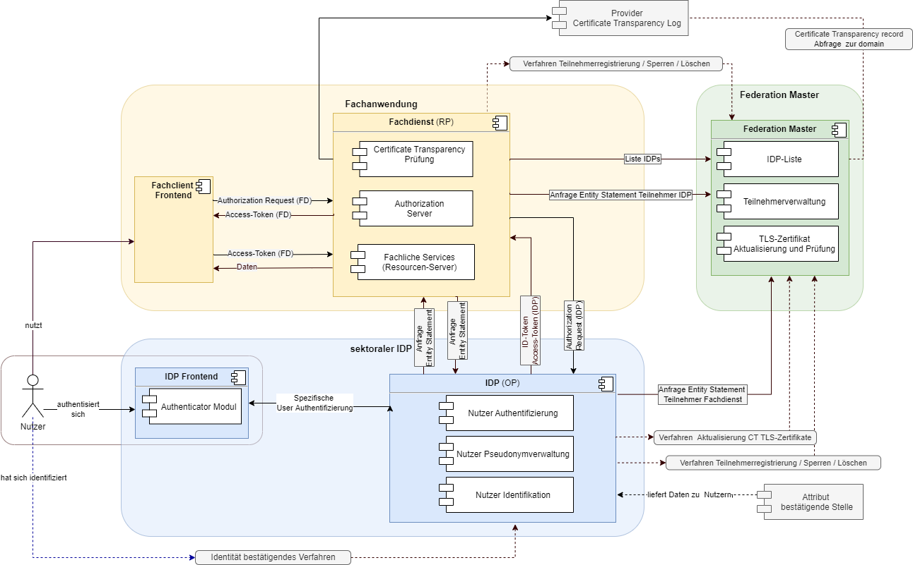
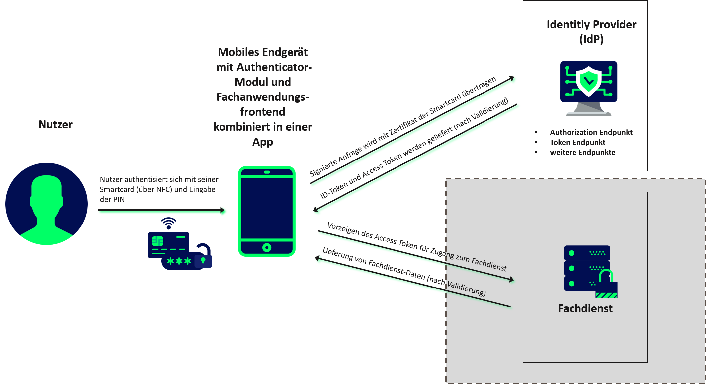
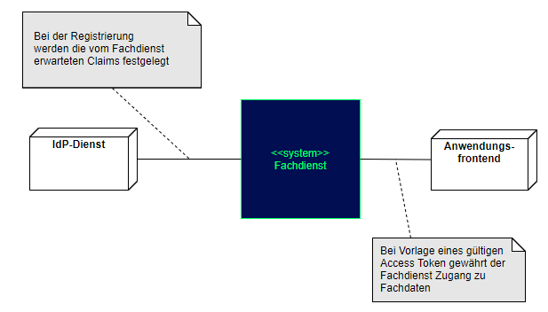

Elektronische Gesundheitskarte und Telematikinfrastruktur
Spezifikation Identity Provider – Nutzungsspezifikation
für Fachdienste
| Version | 1.5.0 |
| Revision | 567567 |
| Stand | 06.02.23 |
| Status | freigegeben |
| Klassifizierung | öffentlich |
| Referenzierung | gemSpec_IDP_FD |
Änderungen zur Vorversion
Anpassungen des vorliegenden Dokumentes im Vergleich zur Vorversion können Sie der nachfolgenden Tabelle entnehmen.
Dokumentenhistorie
| Version |
Stand |
Kap./ Seite |
Grund der Änderung, besondere Hinweise |
Bearbeitung |
|---|---|---|---|---|
| 1.0.0 | 30.06.20 | initiale Erstellung des Dokuments | gematik | |
| 1.1.0 | 12.10.20 | Einarbeitung Scope-Themen zu R4.0.1 |
gematik | |
| 1.1.1 | 13.11.20 | Einarbeitung P22.4 | gematik | |
| 1.2.0 | 19.02.21 | Einarbeitung P22.5 | gematik | |
| 1.3.0 | 14.06.21 | Einarbeitung IDP 2.2.0 (inkl. entsprechender Anteile aus gemF_Tokenverschlüsselung & gemF_Biometrie) und der Änderungsliste IDP_Maintenance_21.1 | gematik | |
| 1.4.0 | 17.12.21 | Einarbeitung IDP 2.3.0 (inkl. entsprechender Anteile aus gemF_sektorale_IDP) und der Änderungsliste IdP_CR_Q4 zur Funktion eines Authorization-Server in der Föderation | gematik | |
| 1.5.0 | 06.02.23 | Einarbeitung IDP_Maintenance_22.2 | gematik |
Dieses Kapitel definiert die Anforderungen zu Herstellung, Test und Betrieb der Schnittstellen von Fachdiensten, die am föderierten Identity Management der TI teilnehmen wollen, um dessen Benutzern darüber die Authentisierung zu ermöglichen, oder die den Identity Provider-Dienst (IDP-Dienst) nutzen wollen.
Die bisherigen Inhalte der gemSpec_IDP_FD beschreiben die Nutzung des IDP Dienstes und gelten weiterhin als Unterkapitel.
Das Dokument richtet sich an Hersteller und Anbieter von Fachdiensten und Fachanwendungen, welche die Funktion des IDP-Dienstes nutzen wollen oder die am föderierten Identity Management der TI teilnehmen wollen.
Dieses Dokument enthält normative Festlegungen zur Telematikinfrastruktur des deutschen Gesundheitswesens. Der Gültigkeitszeitraum der vorliegenden Version und deren Anwendung in Zulassungs- oder Abnahmeverfahren wird durch die gematik GmbH in gesonderten Dokumenten (z. B. Dokumentenlandkarte, Produkttypsteckbrief, Leistungsbeschreibung) festgelegt und bekanntgegeben.
Schutzrechts-/Patentrechtshinweis
Die nachfolgende Spezifikation ist von der gematik allein unter technischen Gesichtspunkten erstellt worden. Im Einzelfall kann nicht ausgeschlossen werden, dass die Implementierung der Spezifikation in technische Schutzrechte Dritter eingreift. Es ist allein Sache des Anbieters oder Herstellers, durch geeignete Maßnahmen dafür Sorge zu tragen, dass von ihm aufgrund der Spezifikation angebotene Produkte und/oder Leistungen nicht gegen Schutzrechte Dritter verstoßen und sich ggf. die erforderlichen Erlaubnisse/Lizenzen von den betroffenen Schutzrechtsinhabern einzuholen. Die gematik GmbH übernimmt insofern keinerlei Gewährleistungen.
Spezifiziert werden in diesem Dokument die von den Produkttypen sektoraler Identity Provider und IDP-Dienst bereitgestellten Schnittstellen sowie die Bedingungen, unter denen diese zu nutzen sind. Weitere Details zu den benutzten Schnittstellen werden in den Spezifikationen des sektoralen Identity Providers bzw. des IDP-Dienstes beschrieben. Auf die entsprechenden Dokumente wird referenziert (siehe auch Anhang ).
Die vollständige Anforderungslage für die Produkttypen sektoraler Identity Provider und IDP-Dienst ergibt sich aus den weiteren Konzept- und Spezifikationsdokumenten; diese sind in den jeweiligen Produkttypsteckbriefen verzeichnet.
Nicht Bestandteil des vorliegenden Dokumentes sind die Festlegungen und Anforderungen, welche sich an sektorale Identity Provider und den IDP-Dienst selbst richten.
Anforderungen als Ausdruck normativer Festlegungen werden durch eine eindeutige ID in eckigen Klammern sowie die dem RFC 2119 [RFC2119] entsprechenden, in Großbuchstaben geschriebenen deutschen Schlüsselworte MUSS, DARF NICHT, SOLL, SOLL NICHT, KANN gekennzeichnet.
Sie werden im Dokument wie folgt dargestellt:
<AFO-ID> - <Titel der Afo>
Text / Beschreibung
[<=]
Dabei umfasst die Anforderung sämtliche zwischen Afo-ID und der Textmarke [<=] angeführten Inhalte.
Hinweis auf offene Punkte
| Offene Punkten werden im Dokument in dieser Darstellung ausgewiesen. |
Im Rahmen der Telematikinfrastruktur (TI) werden zahlreiche Fachdienste angeboten. Sektorale Identity Provider (IDPs) übernehmen für diese Fachdienste die Aufgabe der Authentisierung des Nutzers. Anwendungsfrontends können, über die Authentifizierung des Nutzers gegenüber sektoralen IDP, Zugriff zu den von den Fachdiensten für den jeweiligen Nutzer angebotenen Daten erhalten. Sektorale IDP stellen durch gesicherte JSON Web Token (JWT) attestierte Identitäten aus, sogenannten ID_TOKEN. Auf dieser Basis wird dem Anwendungsfrontends vom Authorization-Server des Fachdienstes ein ACCESS_TOKEN ausgestellt. Gegen Vorlage dieses ACCESS_TOKEN erhalten Anwendungsfrontends, entsprechend der im Token attestierten Informationen, Zugriff auf die Inhalte der Fachdienst API. Der Authorization-Server und die Fachdienst API sind Teile des Fachdienstes. Fachdienste müssen keine Überprüfung des Nutzers selbst implementieren, sondern können sich darauf verlassen, dass der Nutzer bereits identifiziert und authentisiert wurde und die im ID_TOKEN enthaltenen Attribute gültig sind. Zudem müssen im ACCESS_TOKEN keine persönlichen Informationen enthalten sein, sondern diese können, sofern benötigt von der Fachdienst API abgerufen werden.
Im Falle einer App als Anwendungsfrontend werden direkt dort die ACCESS_TOKEN gehandhabt und gespeichert. Im Falle eines Web-basierten Anwendungsfrontends kann diese Aufgabe das Web-Backend übernehmen.
Abbildung 1: Systemüberblick
Die Abbildung stellt den Systemüberblick dar. Der Authentifizierungsprozess, welcher mit der Ausstellung und Übergabe der Token an das Anwendungsfrontend endet, wird dabei zur besseren Übersicht vereinfacht dargestellt.
Fachdienste, welche sektorale IDPs der TI-Föderation zur Nutzer-Authentisierung nutzen möchten, müssen die folgenden Prozesse und Schnittstellen bedienen:
Alle Fachdienste müssen zur Absicherung der JWT gegen Einsichtnahme und Profilbildung durch Dritte den Transportweg bis in die Vertrauenswürdige Ausführungsumgebung (siehe [gemSpec_IDP_Sek]) mit Transport Layer Security (TLS) gemäß [gemSpec_Krypt] absichern.
Der Systemkontext besteht für den Fachdienst aus einem sektoralen Identity Provider, dem Federation Master und einem Anwendungsfrontend.
Der Fachdienst muss beim Federation Master eine organisatorische Registrierung durchführen [gemSpec_IDP_FedMaster], bei welcher der vom Fachdienst verwendete kryptographische öffentlicher Schlüssel sowie dessen Adresse beim Federation Master hinterlegt werden.
Der Fachdienst besteht aus einem Authorization-Server, einer Fachdienst API und optional aus einem Web-Backend. Das Web-Backend kann im Falle einer Web-Anwendung zur Anwendung kommen. In diesem Fall besteht das Anwendungsfrontend aus einer Web-Anwendung die üblicherweise im Browser des Benutzers ausgeführt wird. Diese Web-Anwendung interagiert mit dem Web-Backend, der wiederum Teilaufgaben übernehmen kann und insb. mit dem Authorization-Server kommuniziert. Bei einer solchen Web-Lösung muss keine direkte Interaktion zwischen Anwendungsfrontend und Authorization-Server erfolgen.
Im Falle einer mobilen App stellt diese das Anwendungsfrontend dar und es ist kein Web-Backend nötig.
Das Anwendungsfrontend bzw. Web-Backend erlangt nach Vorlage des ACCESS_TOKEN und positiver Validierung der Inhalte des Tokens durch den Fachdienst Zugang zu den angeforderten Fachdaten.
Die folgende Abbildung stellt den Systemkontext aus Sicht eines Fachdienstes dar.

Abbildung 2: Systemkontext
Im Systemkontext des Fachdienstes interagieren verschiedene Akteure (Nutzer und aktive Komponenten) in unterschiedlichen OAuth2-Rollen gemäß [RFC6749 # section-1.1].
Tabelle 1: TAB_IDP_FD_0001 Akteure und Rollen nach OAuth2/OIDC
| Akteur | OAuth2-Rolle | OIDC Rolle |
|---|---|---|
| Nutzer | Resource Owner | End-User |
| Fachdienst | Resource Server | - |
| Anwendungsfrontend | Client | - |
| Authenticator-Modul | - | Komponente des IDP auf dem Gerät des Nutzer |
| Authorization Server | Authorization Server | Relying Party (RP) |
| sektoraler Identity Provider | - | OpenID Provider (OP) |
| Fachdaten | Protected Resource | - |
| Federation Master | - | Federation Master |
Nutzer
Der Resource Owner ist der Nutzer, welcher auf die beim Fachdienst (Resource Server) für ihn bereitgestellten Daten (Protected Resource) zugreift.
Der Resource Owner verfügt über die folgenden Komponenten:
· Endgerät des Nutzers
· Authenticator-Modul
· Anwendungsfrontend
Fachdienst
Der Resource Server ist der Fachdienst, der dem Nutzer (Resource Owner) Zugriff auf seine Fachdaten (Protected Resource) gewährt. Der Fachdienst, der die geschützten Fachdaten (Protected Resources) anbietet, ist in der Lage, auf Basis von ACCESS_TOKEN Zugriff für Clients zu gewähren. Ein solches Token repräsentiert die delegierte Identifikation des Resource Owners.
Anwendungsfrontend
Der Frontend greift als OAuth2 Client auf Fachdienste (Resource Server) und ihre geschützten Fachdaten (Protected Resource) zu. Das Anwendungsfrontend kann auf einem Server als Webanwendung (Backend System), auf einem Desktop-PC oder einem mobilen Gerät (z.B. Smartphone) ausgeführt werden.
Authenticator-Modul
Das Authenticator-Modul stellt eine Komponente des sektoralen IDP dar über welche die Authentifizierung des Nutzers stattfindet. Sie wird auf einem Gerät des Nutzers ausgeführt.
Authorization Server
Der Authorization Server gehört zum Fachdienst und autorisiert (erlaubt) für einen bestimmten Resource Owner Zugriff auf die Fachdaten am Fachdienst - basierend auf der Identität und den Rechten des Nutzers. Gegenüber dem sektoralen IDP agiert er als Client welcher die Authentisierung des Nutzers anfragt.
sektoraler Identity Provider
Der IDP authentifiziert den Nutzer und bestätigt die Identität des Resource Owner gegenüber dem Authorization Server. Die in der Föderation registrierten Fachdienste nutzen die sektoralen Identity Provider um Nutzer ihrer Anwendungen über die Verfahren der sektoralen Identity Provider eindeutig zu authentifizieren und die Zustimmung der Datennutzung von den Nutzern einzuholen. Dabei nutzt der sektorale Identity Provider das Authenticator-Modul als Schnittstelle zum Nutzer.
Fachdaten
Die geschützten Fachdaten, welche vom Fachdienst (Resource Server) angeboten werden.
Federation Master
Der Federation Master verwaltet und vermittelt die Vertrauensbeziehungen zwischen Identity Providern und Fachdiensten, so dass diese keine bilateralen Verbindungen über organisatorische Registrierungsprozesse bilden müssen. Er bestätigt Kryptographische Schlüssel der Dienste und ermöglicht es so das Nutzern jedes sektoralen Identity Provider direkt auf alle Dienste der Föderation zugreifen können. Und er schafft Möglichkeiten dazu Dienste aus der Föderation auszuschließen, wenn es dazu die Notwendigkeit gibt.
Fachdienstbetreiber müssen ihren Authorization-Server beim Federation Master registrieren. Die Registrierung erfolgt als organisatorischer Prozess, bevor ein Fachdienst an den vom föderierten Identitätsmanagement (IDM) angebotenen Authentifizierungsprozessen teilnehmen kann. Erst nach erfolgter Registrierung, bei der die Adresse des Fachdienstes bzw. seines Authorization-Servers, seine öffentlichen Schlüssel sowie der verwendete scope angegeben wurden, können sektorale Identity Provider ID_TOKEN für den Fachdienst ausstellen.
Hinweis: scopes definieren konkrete Key/Value-Paare, die als Payload eines JWT codiert werden. Ein vereinbarter scope sagt aus, welche Key/Value-Paare im Payload erwartet werden. Die Vereinbarung wird zwischen dem Fachdienst und dem Federation Master während der Registrierung des Fachdienstes getroffen. Im Rahmen einer Authentifizierung fragen Authorization-Server den jeweils benötigten scope an, der im Rahmen des ID_TOKEN vom sektoralen Identity Provider bestätigt wird.
| Offener Punkt: Definition der Kriterien, welche eine Drittanwendung erfüllen muss, um in die Föderation aufgenommen zu werden |
| Offener Punkt: Definition der Kriterien und Prozesse, wie eine Drittanwendung in die Föderation aufgenommen wird. |
A_23045
Anbieter von Fachdiensten MÜSSEN bei der Registrierung ihrer Authorization-Server am Federation Master die von ihnen erwarteten Attribute in scopes (siehe Abschnitt ) beschreiben und dem Federation Master zur Verfügung stellen. Die Registrierung MUSS ebenso die absolute URI des Fachdienstes im Internet umfassen (seine Client-ID) sowie dessen Signaturschlüssel für das Entity_Statement. <=
A_23046
Anbieter von Fachdiensten MÜSSEN den öffentlichen Signaturschlüssel des Federation Master durch einen sicheren Registrierungsprozess im Authorization-Server einbringen und initial zur Signaturprüfung verwenden. <=
Hinweis: Weitere Signaturschlüssel des Federation Master können aus dessen Entity Statement importiert werden.
A_23042
Die Hersteller der Fachdienste MÜSSEN prüfen ob die CA, welche die TLS Zertifikate für Verbindungen in den sicheren Verarbeitungskontext eines sektoralen Identity Provider erstellt hat, Certificate Transparency gemäß RFC 6962/RFC 9162 unterstützt. <=
Hinweis: Diese Funktionalität wird durch aktuelle Standard Bibliotheken für TLS Verbindungen unterstützt.
Der Payload eines JWT beinhaltet Key/Value-Paare, welche in einem oder mehreren scopes definiert werden. Inhalte eines scopes sind mehrere Attribute, welche der sektorale IDP auf Basis der vorgetragenen Identität bestätigen kann.
Die scopes beinhalten die für diesen Fachdienst abgestimmten Attribute (die scopes werden pro Fachdienst in einem organisatorischen Prozess gesondert vom jeweiligen Fachdienst mit dem Federation Master abgestimmt) und den Wertebereich, welchen diese annehmen können.
Neben den im Standard vorgesehenen Attributen (siehe openid-connect-core-1_0.html#IDToken) erwarten Fachdienste in der Regel weitere Informationen, wie zum Beispiel Vorname, Name, Rolle und KVNR des Nutzers. Siehe hierzu auch [gemSpec_IDP_Sek] Kapitel: "Token-Endpunkt Ausgangsdaten".
A_23035
Fachdienste MÜSSEN das Attribut sub als pseudonyme ID des Versicherten in Kombination mit dem iss des ausstellenden IDP verwenden, da dieses nur eineindeutig je IDP ist. <=
A_23036
Fachdienste MÜSSEN bei ihrer Registrierung am Federation Master sicherstellen, dass ausschließlich die fachlich benötigten Attribute aus der in [gemSpec_IDP_Sek] Kapitel: "Token-Endpunkt Ausgangsdaten" definierten Auswahl als scopes beantragt werden. <=
Hinweis: Der Aufbau von ID_TOKEN entspricht den Anforderungen gemäß [gemSpec_IDP_Sek] Kapitel: "Token-Endpunkt Ausgangsdaten".
Hinweis: Fachdienste, welche keine personenbezogenen Daten des Nutzers benötigen, setzen allein den Scope "openid" und erhalten damit im Attribut sub eine dienstspezifische pseudonyme ID des Versicherten.
A_23037
Sind einzelne claims des angefragten scopes nicht im ID_TOKEN enthalten oder leer, weil beispielsweise der Nutzer die Herausgabe verweigert oder Daten nicht hinterlegt wurden, so MUSS der Fachdienste das ID_TOKEN trotzdem akzeptieren und innerhalb der Fachanwendung geeignet reagieren. <=
Hinweis: Geeignete Reaktion auf fehlenden claims könnten darin bestehen, dass nur fachliche Anwendungsfälle ausgeführt werden, für welche die Informationen zum Nutzer hinreichend vorhanden sind. Zulässig ist auch eine Ablehnung des Benutzers mit entsprechender Information für den Fall, dass ohne die notwendigen Angaben aus den fehlenden claims keine Ausführung fachlicher Anwendungsfälle möglich ist.
A_23004
Fachdienste MÜSSEN eine Authentisierung auf dem für den Zugriff auf ihre Fachdaten notwendigen Vertrauensniveau im Parameter acr_values des Pushed Authorization-Request anfragen oder wenn nur ein Wert in Frage kommt diesen im Feld default_acr_values ihres Entity Statements nennen. <=
A_23005
Fachdienste MÜSSEN prüfen, ob das im ID_TOKEN im Feld acr gelistete Vertrauensniveau der durchgeführten Authentisierung für den Zugriff auf ihre Fachdaten ausreicht. <=
AF_10116
Tabelle 2: Anwendungsfall "Bereitstellung Liste registrierte Identity Provider"
| Attribute | Bemerkung |
|---|---|
| Beschreibung | Ein Anwender möchte einen in der TI registrierte Fachdienst nutzen. Der Fachdienst muss sicherstellen, dass der Anwender zur Nutzung des Dienstes berechtigt ist. Hierzu authentisiert sich der Anwender gegenüber einem sektoralen Identity Provider, bei dem er registriert ist. Diesen wählt er aus einer Liste aller in der TI zur Verfügung stehenden sektoralen Identity Provider aus. Der Authorization-Server MUSS dem Anwendungsfrontend oder dem Web-Backend eine Liste der in der TI registrierten sektoralen Identity Provider zur Verfügung stellen, oder selbst dem Benutzer eine Auswahlmöglichkeit bieten. Diese Liste MUSS sich der Authorization-Server vom Federation Master abfragen. Jeder Listeneintrag MUSS mindestens diese Informationen enthalten:
|
| Akteur | Anwender der Fachanwendung |
| Auslöser | Ein Anwender möchte eine Gesundheitsanwendung der TI (Fachdienst) nutzen. Als Voraussetzung für die Authentifizierung des Anwenders muss dieser auswählen, bei welchem Identity Provider er registriert ist (bei Versicherten - Auswahl der Krankenkasse). |
| Komponenten |
|
| Vorbedingung |
|
| Ablauf |
|
| Ergebnis | Das Anwendungsfrontend zeigt dem Nutzer die Liste der registrierten Identity Provider an. |
| Akzeptanzkriterien | , , |
| Alternativen | Das Anwendungsfrontend oder Web-Backend hat die IDP-Liste bereits zwischengespeichert. In diesem Fall KANN auf den Abruf der IDP Liste verzichtet werden. Das Anwendungsfrontend oder Web-Backend kennt (z. B. aus früheren Sitzungen) den sektoralen Identity Provider des Anwenders. In diesem Fall KANN auf den Abruf und Anzeige der IDP Liste verzichtet werden. Der Fachdienst KANN sich die notwendigen Informationen auch über die Standard-Schnittstelle federation_list_endpoint des Federation Master abrufen (OpenID Connect Federation 1.0#name-federation-entity). In diesem Fall muss er selbst eine Übersicht aller sektoralen Identity Provider generieren, deren Entity Statements auslesen und mit den so erhaltenen Informationen dem Nutzer eine Auswahl anbieten. |
ML-133108
Der Authorization-Server nimmt vom Anwendungsfrontend den Request zum Abruf der IDP-Liste entgegen und gibt als Response ein signiertes JWS zurück. <=
ML-133109
Das Anwendungsfrontend oder Web-Backend hat die Integrität der erhaltenen IDP-Liste erfolgreich geprüft.
<=
A_23033
Die Integrität der vom Anwendungsfrontend verarbeitete IDP-Liste MUSS gewährleistet werden (z. B. mittels Signaturprüfung). <=
Hinweis: Dabei kann das Anwendungsfrontend entweder gegen den bekannten öffentlichen Schlüssel des Federation Master prüfen, der Authorization-Server die Liste mit einem dem Anwendungsfrontend bekannten Schlüssel neu signieren oder aber die Liste durch den Authorization-Server innerhalb einer gesicherten TLS Verbindung zum Anwendungsfrontend zur Anzeige gebracht werden.
A_23336
Ein Fachdienst als Teilnehmer der TI-Föderation MUSS bei dem eingesetzten Schlüsselmaterial (Signatur, Authorisierungstoken, Entity Statement, etc.), folgende Vorgaben umsetzen:
A_23034
Authorization-Server MÜSSEN über sich ein, ES256 signiertes, Entity Statement gemäß [OpenID Connect Federation 1.0#rfc.section.6] unter ".well-known/openid-federation" veröffentlichen. Das Entity Statement ist maximal 24h gültig. <=
Hinweis: Details zum Aufbau des Entity Statements finden sich in den [gemSpec_IDP_Sek] Tabellen: "Header des Entity Statement des Fachdienstes" und "Body des Entity Statement des Fachdienstes".
A_23038
Authorization-Server MÜSSEN benötigte Schlüssel und Endpunkte des Federation Master und verwendeter sektoraler Identity Provider durch Abfrage ihrer Entity Statements entsprechend [gemSpec_IDP_FedMaster]#AF_10101 einholen. <=
A_23039
Authorization-Server KÖNNEN einmal heruntergeladene fremde Entity Statements zwischenspeichern. Diese SOLLEN nach 12 Stunden erneut heruntergeladen werden und MÜSSEN nach maximal 24 Stunden verworfen werden. <=
Hinweis: Die Anforderung gilt sowohl für die Statements des Identity Provider sowie für die Statements des Federation Master über die Identity Provider.
A_23040
Authorization-Server MÜSSEN die Signatur der heruntergeladenen Entity Statement prüfen und auf einen zeitlich gültigen Signaturschlüssel zurückführen, welcher von dem ihm bekannten Federation Master oder von einem durch den Federation Master beglaubigten sektoralen Identity Provider ausgestellt sein MUSS. Vor der weiteren Verwendung MUSS die Prüfung der Entity Statements erfolgreich abgeschlossen sein. <=
Hinweis: Der Abgleich des Signaturschlüssels muss gegen ein frisch abgerufenes Statement des Federation Master zu diesem sektoralen Identity Provider erfolgen.
A_23183
Authorization-Server MÜSSEN sicherstellen, dass die für die TLS Client Authentisierung gegenüber sektoralen IDPs verwendeten Schlüssel über das Entity Statement validiert werden können, indem für diese Zertifikate im Schlüsselsatz (jwks) des Fachdienstes abgelegt werden. ("use = sig", x5c Objekt gesetzt). Nach [RFC8705-section 2.2 (https://www.rfc-editor.org/rfc/rfc8705.html#name-self-signed-certificate-mut)] ist der Authorization-Server erfolgreich authentifiziert, wenn das Zertifikat, das er während des Handshakes vorgelegt hat, mit einem der für diesen bestimmten Client registrierten Zertifikate übereinstimmt. <=
Hinweis: Details zum Aufbau des signed_jwks Schlüsselsatzes finden sich in den [gemSpec_IDP_Sek] Tabellen: "Header des KeySet des Fachdienstes" und "Body des KeySet des Fachdienstes"
A_23185
Authorization-Server MÜSSEN sicherstellen, dass die für die Authentisierung des Fachdienstes, als Client der mTLS Verbindung zum sektoralen IDP, verwendeten Zertifikate eine maximale Gültigkeit von 398 Tagen haben und das Schlüsselmaterial anschließend nicht weiterverwendet wird. <=
A_23194
Authorization-Server MÜSSEN sicherstellen, dass die für die Verschlüsselung von ID_TOKEN durch den sektoralen IDPs verwendeten öffentlichen Schlüssel über das Entity Statement zur Verfügung gestellt werden, indem diese im Schlüsselsatz (jwks) des Fachdienstes abgelegt werden. (use = enc). <=
A_23196
Authorization-Server MÜSSEN sicherstellen, dass für TLS-Authentisierung, Token-Verschlüsselung und Signatur seines Entity Statements nur ECC Schlüssel der Kurve P256 [RFC-5480] verwendet werden. <=
AF_10117
Tabelle 3: Anwendungsfall "OAuth 2.0 Pushed Authorization Request"
| Attribute | Bemerkung |
|---|---|
| Beschreibung | Ein Anwender möchte einen in der TI registrierten Fachdienst nutzen. Der Fachdienst muss sicherstellen, dass der Anwender zur Nutzung des Dienstes berechtigt ist. Hierzu authentisiert sich der Anwender gegenüber einem sektoralen Identity Provider, bei dem er registriert ist. Der Authorization-Server MUSS bei Erhalt eines Autorisierung Requests vom Anwendungsfrontend oder vom Web-Backend eine entsprechende Anfrage (Pushed Authorization Request) an den angegebenen sektoralen Identity Provider senden. Anschließend sendet der Authorization-Server die vom sektoralen Identity Provider erhaltene URI zurück an die aufrufende Instanz. |
| Akteur | Anwender der Fachanwendung |
| Auslöser | Ein Anwender möchte eine Gesundheitsanwendung der TI (Fachdienst) nutzen. Als Voraussetzung muss er sich bei einem sektoralen Identity Provider authentifizieren, bei welchem er registriert ist. |
| Komponenten |
|
| Vorbedingung |
|
| Ablauf |
|
| Ergebnis | Das Anwendungsfrontend oder Web-Backend hat die PAR URI erhalten, mittels derer er die Benutzerauthentifizierung initiieren kann. |
| Akzeptanzkriterien | , |
| Alternativen | keine |
Hinweis: Sollte es zur Störungsbehebung notwendig sein, eine Fachdienstanfrage und Nutzerauthentisierung zu korrelieren, kann der sektorale IDP zu diesem Zweck die durch den Fachdienst für diesen Fall auf organisatorischem Weg zu liefernde "nonce" der Anfrage nutzen.
ML-133233
Das Anwendungsfrontend oder Web-Backend hat die Antwort auf den Pushed Authorization Request vom Authorization-Server erhalten. <=
ML-133234
Die gelieferte Antwort enthält die PAR URI, mittels derer das Anwendungsfrontend oder Web-Backend die Benutzerauthentifizierung initiieren kann. <=
A_23047
Authorization-Server MÜSSEN einen OAuth 2.0 Authorization Endpunkt anbieten um Authorization Requests mit PKCE/Code Challenge entsprechend https://datatracker.ietf.org/doc/html/rfc6749#section-4.1.1 und https://datatracker.ietf.org/doc/html/rfc7636#section-4.3 zu akzeptieren und zu verarbeiten. <=
A_23048
Authorization-Server MÜSSEN nach Erhalt eines Authorization Request entsprechend OAuth 2.0 Pushed Authorization Requests (PAR) https://datatracker.ietf.org/doc/html/rfc9126 mit sektoralen Identity Providern kommunizieren und eine entsprechende Antwort an die aufrufende Instanz zurück senden. <=
A_23500
Wird der erstmalige PAR des Fachdienstes an einen sektoralen IDP mit dem Fehlercode HTTP 401 quittiert, so war der Fachdienst dem sektoralen IDP noch nicht bekannt. Der Fachdienst MUSS in diesem Fall den PAR wiederholen. <=
Hinweis: Nach A_22649 registriert der sektorale IDP den anfragenden Fachdienst nach dem ersten Request gemäß https://openid.net/specs/openid-connect-federation-1_0.html#section-10.1.1.1.1.
AF_10118
Tabelle 4: Anwendungsfall "Benutzerauthentifizierung und Erhalt des ID_TOKEN"
| Attribute | Bemerkung |
|---|---|
| Beschreibung | Ein Anwender möchte einen in der TI registrierten Fachdienst nutzen. Der Fachdienst muss sicherstellen, dass der Anwender zur Nutzung des Dienstes berechtigt ist. Hierzu authentisiert sich der Anwender gegenüber einem sektoralen Identity Provider, bei dem er registriert ist. Nach Abschluss der Authentisierung des Nutzers gegenüber dem sektoralen Identity Provider, erhält der Authorization-Server den AUTHORIZATION_CODE mit dem er das ID_TOKEN abrufen kann. |
| Akteur | Anwender der Fachanwendung |
| Auslöser | Ein Anwender möchte eine Gesundheitsanwendung der TI (Fachdienst) nutzen. Als Voraussetzung muss er sich bei einem sektoralen Identity Provider authentifizieren, bei welchem er registriert ist. Das Anwendungsfrontend erhält vom Authorization-Server die Pushed Authorization Requests URI zurück ([gemSpec_IDP_Sek] Kapitel: "PAR-Endpunkt Ausgangsdaten"). |
| Komponenten |
|
| Vorbedingung |
|
| Ablauf |
|
| Ergebnis | Der Nutzer ist authentifiziert und der Authorization-Server hat den ID_TOKEN mit dem es den ACCESS_TOKEN zum Zugriff auf die Fachdienst API abrufen kann. |
| Akzeptanzkriterien | , |
| Alternativen | keine |
ML-133236
Der Authorization-Server hat einen ID_TOKEN vom sektoralen Identity Provider erhalten. <=
ML-133237
Der erhaltene ID_TOKEN entspricht den Vorgaben in [gemSpec_IDP_Sek] Tabellen: "Header-claims des ID_TOKEN des sektoralen IDP", "Signature Header-claims des ID_TOKEN des sektoralen IDP" und "Body-claims für den ID_TOKEN des sektoralen IDP". <=
A_23195
Der Fachdienst MUSS das erhaltene ID_TOKEN vor der Verwendung mit seinem korrespondierenden privaten Entschlüsselungskey entsprechend der "kid" in Header entschlüsseln. <=
A_23049
Zugriffsgeschützte Fachdienste MÜSSEN vor Gewährung des Zugriffs, den erhaltenen ID_TOKEN wie folgt prüfen. Nur nach erfolgreicher Überprüfung darf der Zugriff gewährt werden.
A_22861
Bei der Überprüfung eines ID_TOKEN MUSS der Fachdienst, wenn der vom sektoralen Identity Provider verwendete Signatur-Schlüssel ihm unbekannt ist, das Entity Statement des sektoralen Identity Provider sowie die Schlüssel hinter einer eventuell verwendeten signed_jwks_uri herunterladen und auf Vorhandensein der verwendeten kid prüfen. <=
A_23050
Authorization-Server MÜSSEN personenbezogene Daten wie z. B. ID_TOKEN sofort nach Abschluss des Verarbeitungsprozesses verwerfen und dürfen diese nicht dauerhaft speichern, sofern diese nicht anderweitig zu legitimen Zwecken vorgehalten werden müssen (z. B. Protokollierung). <=
A_22860
Fachdienste MÜSSEN erhaltene ID_TOKEN auf das Vorhandensein der benötigten scopes überprüfen. <=
Hinweis: Wenn dem Fachdienst im ID_TOKEN zwingend notwendige Daten nicht übermittelt werden, kann er die Anmeldung des Nutzers nicht durchführen. Gemäß A_22733 ist es für sektorale Identity Provider zulässig, bei fehlenden Daten oder nicht erteilter Zustimmung des Nutzers gewisse Werte in ID_TOKEN nicht zu liefern.
Die Anforderungen im entsprechenden Kapitel 5.2 gelten unverändert auch für Fachdienste im Rahmen der Föderation.
A_23076
Authorization-Server MÜSSEN einen OAuth 2.0 Token Endpunkt anbieten um dort das Abrufen von Zugriffstoken mittels OAuth Code Flow und PKCE entsprechend https://datatracker.ietf.org/doc/html/rfc7636 zu ermöglichen. <=
A_23077
Authorization-Server KÖNNEN Zugriffstoken entsprechend OAuth ACCESS_TOKEN anbieten. <=
A_23078
Vom Authorization-Server bereitgestellte Zugriffstoken DÜRFEN NICHT personenbezogene Daten enthalten, es sei denn diese sind Ende-zu-Ende verschlüsselt. <=
A_23079
Vom Authorization-Server bereitgestellte Zugriffstoken DÜRFEN NICHT länger als 10 Minuten gültig sein. <=
A_23080
Authorization-Server KÖNNEN einen OAuth 2.0 Token Endpunkt anbieten um dort das Abrufen von REFRESH_TOKEN entsprechend https://datatracker.ietf.org/doc/html/rfc6749#section-1.5 zu ermöglichen. <=
A_23204
Fachdienste MÜSSEN nach maximal 10-minütiger Inaktivität des Nutzers vorhandene ACCESS_TOKEN und REFRESH_TOKEN verwerfen und eine erneute Authentisierung fordern. <=
Während die sektoralen Identity Provider den zentralen IDP-Dienst langsam ablösen, bleibt dieser doch für die kartenbasierten Leistungserbringeridentitäten weiterhin eine wichtige Komponente. Anwendungen können den IDP-Dienst nutzen um sich die Identitäten von Leistungserbringern oder Leistungserbringerinstitutionen sicher bestätigen zu lassen ohne eigene Authentisierungsmechanismen zu implementieren.
Anwendungsfrontends können über die Authentifizierung des Nutzers am IDP-Dienst Zugriff zu den von den Fachdiensten angebotenen Daten erhalten. Der IDP-Dienst stellt durch gesicherte JSON Web Token (JWT) attestierte Identitäten aus. Gegen Vorlage eines ACCESS_TOKEN erhalten Anwendungsfrontends, entsprechend der im Token attestierten professionOID, Zugriff auf die Inhalte der Fachdienste.

Abbildung 3: Systemüberblick (vereinfacht)
Die Abbildung stellt den Systemüberblick dar. Der Authentifizierungsprozess, welcher mit der Ausstellung und Übergabe der Token an das Anwendungsfrontend endet, wird dabei zur besseren Übersicht vereinfacht dargestellt.
Der IDP-Dienst übernimmt für den Fachdienst die Aufgabe der Authentisierung des Nutzers. Der IDP-Dienst fasst die professionOID sowie weitere für den Fachdienst notwendige Attribute in signierten JSON Web Token (ID_TOKEN und ACCESS_TOKEN) zusammen. Fachdienste müssen keine Überprüfung des Nutzers selbst implementieren, sondern können sich darauf verlassen, dass der Besitzer des bei ihnen vorgetragenen ACCESS_TOKEN bereits authentisiert wurde. Des Weiteren stellt der IDP-Dienst sicher, dass die vom Nutzer vorgetragenen Attribute (aus dem Signaturzertifikat) gültig sind.
Der IDP-Dienst prüft, ob das vorgetragene X.509-nonQES-Signatur-Zertifikat der verwendeten Prozessor-Chipkarte (eGK, HBA oder SMC-B) für die vorgesehene Laufzeit des Tokens zeitlich gültig und ob dessen Integrität sichergestellt ist.
Der IDP-Dienst stellt nur solche ACCESS_TOKEN aus, welche auf gültigen AUT-Zertifikaten (d.h. C.CH.AUT, C.HP.AUT oder C.HCI.AUT) basieren.
Fachdienste, welche den IDP-Dienst nutzen, müssen die folgenden Prozesse und Schnittstellen bedienen:
Alle Fachdienste müssen zur Absicherung der JSON Web Token gegen Einsichtnahme durch Dritte den Transportweg mit Transport Layer Security (TLS) gemäß [gemSpec_Krypt] absichern. Der Fachdienst muss sowohl im Internet, als auch innerhalb der TI über ein überprüfbares TLS-Serverzertifikat verfügen.
Fachdienste sind ebenfalls Nutzer des IDP-Dienstes als Resource Server und sind bei diesem organisatorisch als OAuth2.0 Client registriert. Sie verwenden die vom IDP-Dienst ausgegebenen ACCESS_TOKEN, um Nutzern Zugriff auf die von ihnen bereitgestellten geschützten Ressourcen, die Fachdaten, zu gewähren.
Der Systemkontext besteht für den Fachdienst aus dem IDP-Dienst und dem Anwendungsfrontend.
Die vom Fachdienst angebotene Schnittstelle, um Fachdaten zu erhalten, wird vom Anwendungsfrontend, welches auf dem Endgerät des Nutzers installiert ist, genutzt. Nutzer wollen über das Anwendungsfrontend Daten vom Fachdienst zur Anzeige, Änderung etc. erhalten. Die Authentisierung des Nutzers wird anhand einer Smartcard und der Auswertung des vom Authenticator-Modul an den IDP-Dienst übergebenen Authentifizierungszertifikats (aus der Smartcard) sichergestellt.
Der Fachdienst muss beim IDP-Dienst eine organisatorische Registrierung durchführen, bei der die vom Fachdienst erwarteten Werte, welche ein ACCESS_TOKEN für einen Zugriff auf die Fachdaten des Fachdienstes enthalten muss, hinterlegt werden.
Das Anwendungsfrontend erlangt nach Vorlage des ACCESS_TOKEN und positiver Validierung der Inhalte des Tokens durch den Fachdienst Zugang zu den angeforderten Fachdaten.
Die folgende Abbildung stellt den Systemkontext aus Sicht eines Fachdienstes dar. Eine Kommunikationsbeziehung besteht nur mit dem Identity Provider und dem Anwendungsfrontend.

Abbildung 4: Systemkontext aus Sicht des Fachdienstes
Fachdienste müssen sich beim IDP-Dienst registrieren. Die Registrierung erfolgt als organisatorischer Prozess, bevor ein Fachdienst am vom IDP-Dienst angebotenen Authentifizierungsprozess teilnehmen kann. Erst nach erfolgter Registrierung, bei der die Adresse des Fachdienstes, sein öffentlicher Schlüssel und die von ihm erwarteten Attribute, in Form von Claims, angegeben wurden, kann der IDP-Dienst ACCESS_TOKEN für den Zugriff zum Fachdienst ausstellen.
A_20295
Der Anbieter des Fachdienstes MUSS, um die Erreichbarkeit des Fachdienstes zu gewährleisten, entsprechende Adressen im TI-Namensraum beantragen. In Fällen, in denen der Fachdienst ebenfalls aus dem Internet erreichbar sein soll, MUSS der Anbieter des Fachdienstes neben der TI-internen auch die notwendigen öffentlichen Adressen bei einem Internet Service Provider (ISP) seiner Wahl beantragen. <=
Hinweis:
Die Beantragung beinhaltet eine sprechende Fachdienstbezeichnung. Die URI des Fachdienstes URI_FD muss dem Authorization Server, welcher Teil des IDP-Dienstes ist, bekanntgegeben werden.
A_20739
Anbieter von Fachdiensten MÜSSEN bei der Registrierung ihrer Fachdienste am IDP-Dienst die von ihnen erwarteten Attribute in einem Claim (siehe Abschnitt ) beschreiben und dem IDP-Dienst zur Verfügung stellen. Die Registrierung MUSS ebenso die absoluten URI des Fachdienstes in der TI sowie im Internet – wenn der Fachdienst auch im Internet erreichbar sein muss – umfassen. <=
Hinweis: Als Claims werden Key/Value-Paare im Payload eines JWT bezeichnet. Ein vereinbarter Claim sagt aus, welche Key/Value-Paare im Payload erwartet werden. Die Vereinbarung wird zwischen dem Fachdienst und dem IDP-Dienst während der Registrierung des Fachdienstes getroffen. Anwendungsfrontends, welche Zugang zum Fachdienst erhalten wollen, müssen die geforderten Claims liefern.
Der Payload eines JSON Web Tokens beinhaltet Key/Value-Paare, welche als Claims bezeichnet werden. Inhalte eines Claims sind die Attribute, welche der IDP-Dienst auf Basis der vorgetragenen Identität aus deren Signaturzertifikat extrahieren kann. Als Basis kommen eGK [gemSpec_PKI # Abschnitt 5.1.3.1 Authentisierung eGK] und HBA [gemSpec_PKI # Abschnitt 5.2.1 Authentisierung HBA] bzw. SMC-B [gemSpec_PKI # 5.3 Ausweis einer Organisation/Einrichtung des Gesundheitswesens] in Frage. Davon abgesehen könnten zukünftig auch Identitäten, welche in einem eigenen oder externen Identity Management gehalten werden, vom IDP-Dienst bestätigt werden.
Die Claims beinhalten die für diesen Fachdienst abgestimmten Attribute (die Claims werden pro Fachdienst in einem organisatorischen Prozess gesondert vom jeweiligen Fachdienst mit dem IDP-Dienst abgestimmt) und den Wertebereich, welchen diese annehmen können.
Neben den im Standard vorgesehenen Attributen (siehe openid-connect-core-1_0.html#IDToken) erwarten Fachdienste weitere Attribute, welche vom Standard nicht bereitgestellt werden.
Im Falle des E-Rezept-Dienstes sind dies z. B.:
Für Versicherte (eGK):
Für Leistungserbringer (SMC-B LEI):
Das Attribut iss beschreibt, wer den ACCESS_TOKEN ausgestellt hat.
Das Attribut sub beschreibt das Subjekt, mit welchem der Fachdienst kommuniziert. Anhand dieses Attributes lassen sich Vorgänge einer bestimmen Entität zuordnen.
Das Attribut professionOID beschreibt die Rolle der agierenden Entität und ist im Falle eines Versicherten immer mit der OID eines Versicherten oid_Versicherter befüllt. Im Falle eines Leistungserbringers oder einer Leistungserbringerinstitution wird hier die sektorspezifische professionOID gemäß [gemSpec_OID # Tab_PKI_402] bzw. [gemSpec_OID # Tab_PKI_403] eingesetzt.
A_20676
Fachdienste MÜSSEN die im Claim benötigten, anforderbaren Informationen über den Nutzer bei ihrer Registrierung beim IdP-Dienst angeben. <=
A_20297-03
Fachdienste MÜSSEN bei ihrer Registrierung am IDP-Dienst sicherstellen, dass für Versicherte mit einer eGK als Nutzer die fachlich benötigten Attribute aus der folgenden Auswahl als Claims beantragt werden. Standardclaims sind mit "public", eigene Claims mit "private" gekennzeichnet:
Tabelle 5: TAB_IDP_FD_0003 Inhalte der Claims für Versicherte
| Attribut | Inhalt |
|---|---|
| iss (public) | Beinhaltet die URL des IDP-Dienstes als HTTPS-Adresse mit Pfad und Angabe des Ports, wenn dieser vom Standard abweicht. Zusätzliche Query-Parameter sind nicht erlaubt. |
| sub (public) | Beinhaltet einen Identifikator. Es werden 3 Eingangswerte verwendet: der Fachdienstidentifier (konfiguriert), ein Fachdienst-spezifischer Salt (konfiguriert) und der Claim idNummer. Diese Eingangswerte werden verkettet in der Reihenfolge: Fachdienstidentifier, Claim idNummer und Fachdienst-spezifischer Salt. Dieser verkettete Text wird mit SHA-256 gehasht, das Ergebnis ist der Claim sub. SHA256 (fd_identifier + idNummer + fd_salt) Dieser zusammengesetzte Wert wird nach der pairwise-Methode [openid-connect-core-1_0 # PairwiseAlg] vom IDP-Dienst zusammengestellt. |
| nonce (public) | Beinhaltet einen Zufallswert, welchen der IDP-Dienst nach den Vorgaben des Anwendungsfrontends befüllt und anhand dessen das Anwendungsfrontend seine Vorgänge unterscheiden und zuordnen kann. (Dieser Claim ist nur in ID_TOKEN enthalten.) |
| acr (public) | Authentication Context Class Reference gemäß [openid-connect-core-1_0 # IDToken] mit dem konkreten Wert "gematik-ehealth-loa-high". |
| amr (public) | Authentication Method Reference gemäß [https://tools.ietf.org/html/rfc8176] und [https://openid.net/specs/openid-connect-modrna-authentication-1_0.html] |
| aud (public) |
Hier sind gemäß [RFC7519 # section-4.1.3] entweder die URI des Fachdienstes oder ein entsprechender eindeutiger String eingetragen, die bzw. der den Fachdienst identifiziert. |
| professionOID (private) |
Beinhaltet die professionOID des Versicherten gemäß [gemSpec_OID#Tab_PKI_402]. |
| given_name (public) | Vorname des Versicherten: der IDP-Dienst liest dies aus dem nonQES-Signaturzertifikat oder dem ID_TOKEN eines sektoralen Identity Provider aus. |
| family_name (public) | Nachname des Versicherten: der IDP-Dienst liest dies aus dem nonQES-Signaturzertifikat oder dem ID_TOKEN eines sektoralen Identity Provider aus. |
| organizationName (private) | ID oder Name der bestätigenden Stelle: der IDP-Dienst liest dies aus dem nonQES-Signaturzertifikat oder dem ID_TOKEN eines sektoralen Identity Provider aus. |
| idNummer (private) | Beinhaltet die KVNR des Versicherten: der IDP-Dienst liest dies aus dem nonQES-Signaturzertifikat oder dem ID_TOKEN eines sektoralen Identity Provider aus. |
| jti | ID des Token |
Hinweise:
Der Aufbau von ACCESS_TOKEN und ID_TOKEN entspricht [gemSpec_IDP_Dienst#Kapitel 7.6 Token Response].
A_20505-02
Fachdienste MÜSSEN bei ihrer Registrierung am IDP-Dienst sicherstellen, dass für Leistungserbringer mit einer HBA als Nutzer die fachlich benötigten Attribute aus der folgenden Auswahl als Claims beantragt werden - Standardclaims sind mit "public", eigene Claims mit "private" gekennzeichnet:
Tabelle 6: TAB_IDP_FD_0004 Inhalte des Claims für Leistungserbringer (HBA)
| Attribut | Inhalt |
|---|---|
| iss (public) | Beinhaltet die URL des IDP-Dienstes als HTTPS-Adresse mit Pfad und Angabe des Ports, wenn dieser vom Standard abweicht. Zusätzliche Query-Parameter sind nicht erlaubt. |
| sub (public) | Beinhaltet einen Identifikator. Es werden 3 Eingangswerte verwendet: der Fachdienstidentifier (konfiguriert), ein Fachdienst-spezifischer Salt (konfiguriert) und der Claim idNummer. Diese Eingangswerte werden verkettet in der Reihenfolge: Fachdienstidentifier, Claim idNummer und Fachdienst-spezifischer Salt. Dieser verkettete Text wird mit SHA-256 gehasht, das Ergebnis ist der Claim sub. SHA256 (fd_identifier + idNummer + fd_salt) Dieser zusammengesetzte Wert wird nach der pairwise-Methode [openid-connect-core-1_0 # PairwiseAlg] vom IDP-Dienst zusammengestellt. |
| nonce (public) | Beinhaltet einen Zufallswert, welchen der IDP-Dienst nach den Vorgaben des Anwendungsfrontends bzw. Primärsystems befüllt und anhand dessen das Primärsystem seine Vorgänge unterscheiden kann. (Dieser Claim ist nur in ID_TOKEN enthalten.) |
| acr (public) | Authentication Context Class Reference gemäß [openid-connect-core-1_0 # IDToken] mit dem konkreten Wert "gematik-ehealth-loa-high". |
| amr (public) | Authentication Method Reference gemäß [https://tools.ietf.org/html/rfc8176] und [https://openid.net/specs/openid-connect-modrna-authentication-1_0.html] |
| aud (public) |
Hier sind gemäß [RFC7519 # section-4.1.3] entweder die URI des Fachdienstes oder ein entsprechender eindeutiger String eingetragen, die bzw. der den Fachdienst identifizieren. |
| professionOID (private) | Beinhaltet die professionOID des Leistungserbringers gemäß [gemSpec_OID # Tab_PKI_402]. |
| given_name (public) | Vorname des Leistungserbringers: der IDP-Dienst liest dies aus dem nonQES-Signaturzertifikat aus. |
| family_name (public) | Nachname des Leistungserbringers: der IDP-Dienst liest dies aus dem nonQES-Signaturzertifikat aus. |
| organizationName (private) | leer - Der Wert des Claims ist immer NULL, da der Wert im AUT-Zertifikat immer leer ist. Der NULL-Wert darf nicht zur Ablehnung des Tokens durch den Fachdienst führen. |
| idNummer (private) | Beinhaltet die Telematik-ID des Leistungserbringers: der IDP-Dienst liest dies aus dem nonQES-Signaturzertifikat aus. |
| jti | ID des Token |
Hinweise:
Der Aufbau von ACCESS_TOKEN und ID_TOKEN entspricht [gemSpec_IDP_Dienst#Kapitel 7.6 Token Response].
Das Claim einer Leistungserbringerinstitution beschreibt nicht die Entität, welche im Namen der Institution agiert, sondern die Institution selbst.
A_20506-03
Fachdienste MÜSSEN bei ihrer Registrierung am IDP-Dienst sicherstellen, dass für Leistungserbringerinstitutionen mit einer SMC-B für Nutzer die fachlich benötigten Attribute aus der folgenden Auswahl als Claims beantragt werden (Standardclaims sind mit "public", eigene Claims mit "private" gekennzeichnet):
Tabelle 7: AB_IDP_FD_0005 Inhalte des Claim für Leistungserbringerinstitutionen (SMC-B)
| Attribut | Inhalt |
|---|---|
| iss (public) | Beinhaltet die URL des IdP-Dienstes als HTTPS-Adresse mit Pfad und Angabe des Ports, wenn dieser vom Standard abweicht. Zusätzliche Query-Parameter sind nicht erlaubt. |
| sub (public) | Beinhaltet einen Identifikator. Es werden 3 Eingangswerte verwendet: der Fachdienst-Identifier (konfiguriert), ein Fachdienst-spezifischer Salt (konfiguriert) und der Claim idNummer. Diese Eingangswerte werden verkettet in der Reihenfolge: Fachdienst-Identifier, Claim idNummer und Fachdienst-spezifischer Salt. Dieser verkettete Text wird mit SHA-256 gehasht. Das Ergebnis ist der Claim sub. SHA256 (fd_identifier + idNummer + fd_salt) Dieser zusammengesetzte Wert wird nach der pairwise-Methode [openid-connect-core-1_0 # PairwiseAlg] vom IDP-Dienst zusammengestellt. |
| nonce (public) | Beinhaltet einen Zufallswert, welchen der IDP-Dienst nach den Vorgaben des Anwendungsfrontends befüllt und anhand dessen das Anwendungsfrontend seine Vorgänge unterscheiden kann. (Dieser Claim ist nur in ID_TOKEN enthalten.) |
| acr (public) | Authentication Context Class Reference gemäß [openid-connect-core-1_0 # IDToken] mit dem konkreten Wert "gematik-ehealth-loa-high". |
| amr (public) | Authentication Method Reference gemäß [https://tools.ietf.org/html/rfc8176] und [https://openid.net/specs/openid-connect-modrna-authentication-1_0.html] |
| aud (public) |
Hier sind gemäß [RFC7519 # section-4.1.3] entweder die URI des Fachdienstes oder ein entsprechender eindeutiger String eingetragen, die bzw. der den Fachdienst identifizieren. |
| professionOID (private) | Beinhaltet die professionOID der Leistungserbringerinstitution gemäß [gemSpec_OID#Tab_PKI_403]. |
| given_name (public) | Vorname des Verantwortlichen/Inhabers: der IDP-Dienst liest dies aus dem nonQES-Signaturzertifikat aus. Sollte der Wert nicht im Zertifikat vorhanden sein, wird der Wert des Claims mit NULL gefüllt. Der NULL-Wert darf nicht zur Ablehnung des Tokens durch den Fachdienst führen. |
| family_name (public) | Nachname des Verantwortlichen/Inhabers: der IDP-Dienst liest dies aus dem nonQES-Signaturzertifikat aus. Sollte der Wert nicht im Zertifikat vorhanden sein, wird der Wert des Claims mit NULL gefüllt. Der NULL-Wert darf nicht zur Ablehnung des Tokens durch den Fachdienst führen. |
| organizationName (private) | Beinhaltet die Bezeichnung der Institution, so wie diese im nonQES-Signaturzertifikat im Attribut subject/commonName eingetragen ist. Der IDP-Dienst liest dies aus dem nonQES-Signaturzertifikat aus. Sollte der Wert nicht im Zertifikat vorhanden sein, wird der Wert des Claims mit NULL gefüllt. Der NULL-Wert darf nicht zur Ablehnung des Tokens durch den Fachdienst führen. |
| idNummer (private) | Beinhaltet die Telematik-ID der Leistungserbringerinstitution: der IDP-Dienst liest dies aus dem nonQES-Signaturzertifikat aus. |
| jti | ID des Token |
Hinweise:
Der Aufbau von ACCESS_TOKEN und ID_TOKEN entspricht [gemSpec_IDP_Dienst#Kapitel 7.6 Token Response].
Bekommt ein Fachdienst Kenntnis davon, dass ein ACCESS_TOKEN zur Durchführung eines Angriffs, z. B. einer Distributed Denial of Service DDOS-Attacke (DDOS), verwendet wird, muss der Fachdienst die IP-Adresse des Absenders in eine Blacklist eintragen, um sich vor weiteren Angriffen von dieser Adresse ausgehend zu schützen. Der Fachdienst muss diese IP-Adresse nach einer Stunde wieder aus der Blacklist entfernen, wenn von der gefilterten IP-Adresse keine weiteren Angriffe mehr verzeichnet werden, damit im Falle dynamisch vergebener IP-Adressen diese wieder genutzt werden kann.
A_20019
Der Fachdienst MUSS eine Blacklist führen, in welcher er IP-Adressen oder ganze Subnetze einträgt, wenn Angriffsszenarien von diesen Adressen oder Netzen erfolgen. <=
A_20020
Fachdienste MÜSSEN Host-Adressen mit einer Verzögerung von einer Stunde aus der Blacklist streichen, wenn von der gefilterten IP-Adresse keine weiteren Angriffe mehr verzeichnet werden. <=
A_20631
Fachdienste DÜRFEN Netzadressen NICHT aus der Blacklist streichen, wenn es sich hierbei um Blacklisting auf Basis von Geo-IP-Adressbereichen handelt. <=
Der IDP-Dienst stellt den authentifizierten Entitäten ACCESS_TOKEN aus, mit welchen diese den Zugriff auf die im Claim des Fachdienstes bereitgestellten Systeme realisieren können.
A_20362
Fachdienste MÜSSEN die gemäß [RFC7519 # section-7.1] vorgeschriebene Struktur der ACCESS_TOKEN gemäß [RFC7519 # section-7.2] validieren.
<=
A_20363-01
Der Fachdienst MUSS die für ihn vom Anwendungsfrontend verschlüsselten ACCESS_TOKEN entsprechend dem für diese Übertragung vorgesehenen Verfahren entschlüsseln.
<=
Hinweis: Hierbei können je nach Anwendung unterschiedliche Verfahren zum Einsatz kommen. Im Fall des E-Rezeptes wird der ACCESS_TOKEN im Rahmen des VAU-Protokolls übertragen und ist damit ausreichend geschützt.
A_20364
Fachdienste DÜRFEN unverschlüsselt eingehende ACCESS_TOKEN NICHT annehmen.
<=
A_20365-01
Fachdienste MÜSSEN die Signatur der ACCESS_TOKEN gegen den öffentlichen Schlüssel des Token-Endpunktes PUK_IDP_SIG prüfen. Fachdienste MÜSSEN den öffentlichen Schlüssel PUK_IDP_SIG dabei dem Discovery Document des IDP-Dienstes entnehmen. <=
A_20504
Der Fachdienst MUSS alle mit dem ACCESS_TOKEN verbundenen Vorgänge abbrechen, wenn das ACCESS_TOKEN nicht signiert oder dessen Signatur fehlerhaft ist.
<=
A_20367
Fachdienste MÜSSEN Fehler, welche bei der Annahme des ACCESS_TOKEN entstehen, melden. Die Fehlermeldung MUSS mit dem privaten Schlüssel PRK_FD signiert sein. Die Fehlermeldungen MÜSSEN für den Anwender verständlich formuliert sein. <=
A_20369-01
Der Fachdienst MUSS die im ACCESS_TOKEN übertragenen Attribute mit denen vergleichen, die mit dem IDP-Dienst bei der Registrierung vereinbart wurden und alle mit dem ACCESS_TOKEN in Verbindung stehenden Vorgänge abbrechen, wenn dem ACCESS_TOKEN für die Verarbeitung notwendige Claims fehlen oder aber andere als die mit dem IDP-Dienst vereinbarten personenbezogenen Attribute vorhanden sind. <=
Hinweis: Als personenbezogenes Attribute gelten gemäß Tabelle: TAB_IDP_DIENST_0005 die Claims given_name, family_name, organizationName, professionOID und idNummer.
A_20370
Fachdienste MÜSSEN ACCESS_TOKEN ablehnen, wenn die in einem Attribut vorgetragenen Werte nicht dem schematisch erwarteten Datentyp des Attributes entsprechen. <=
A_20373
Fachdienste MÜSSEN sicherstellen, dass der Zeitraum der Verwendung des Tokens zwischen den im Token mitgelieferten Werten der Attribute iat und exp liegt. <=
A_20374
Fachdienste MÜSSEN sicherstellen, dass der Zeitraum der Verwendung des Tokens zwischen den im Token mitgelieferten Werten der Attribute nbf und exp liegt. <=
A_21520
Fachdienste MÜSSEN den Claim aud des ACCESS_TOKEN mit ihrer beim IDP-Dienst registrierten URI prüfen. Nur wenn diese übereinstimmen, gilt diese Prüfung als positiv validiert. <=
A_21521
Fachdienste MÜSSEN die Signatur des Discovery Document mathematisch prüfen und auf ein zeitlich gültiges C.FD.SIG-Zertifikat mit der Rollen-OID oid_idpd zurückführen können, welches von einer ihm bekannten Komponenten-PKI ausgestellt wurde. <=
Die Registrierung eines Fachdienstes erfolgt in enger Abstimmung zwischen Fachdienst und IDP-Dienst. Fachdienste geben dem IDP-Dienst gegenüber bei der Registrierung an, mit welchen Gültigkeitszeiträumen die ACCESS_TOKEN und SSO_TOKEN ausgestattet werden sollen. Der Fachdienst selbst sieht vor, welche Nutzergruppe generell Zugriff erhalten, indem nur für diese Nutzer Claims vorgesehen sind. Registriert beispielsweise ein Fachdienst für die von ihm bereitgestellten Fachdaten kein Claim für Versicherte, können diese am Authorization-Endpunkt auch kein ACCESS_TOKEN zu diesem Fachdienst erhalten.
A_20679-01
Der Anbieter des Fachdienstes MUSS sich für die Beantragung eines Claims beim IdP-Dienst registrieren, um ein Claim für eine bestimmte Nutzergruppe für seinen Fachdienst zu beantragen. <=
A_20375-01
Der Anbieter des Fachdienstes MUSS bei der Registrierung der Claims im Attribut tokenTimeout angeben, welche Lebensdauer das ACCESS_TOKEN haben soll. <=
A_20503-02
Der Anbieter des Fachdienstes MUSS bei der Registrierung die folgenden Werte aus den hier vorgegebenen Bereichen angeben.
Liste der Lebenszyklen der Token registrierter Fachdienste:
Tabelle 8: AB_IDP_FD_0006 Lebenszyklen der Token
| Name | Werte | Beispiel | Anmerkung |
|---|---|---|---|
| Fachdienst | <String> | eRp | Name des Fachdienstes |
| Lebensdauer ACCESS_TOKEN (in Sekunden) |
60-900 | 300 sec (= 5Minuten) | Die Gültigkeitsdauer der ACCESS_TOKEN darf maximal 15 Minuten betragen |
| Maximale Gültigkeit der Session (in Sekunden) |
0-43.200 | 43.200 (=12 Stunden) | Die Session (Gültigkeitsdauer von SSO_TOKEN bzw. ID_TOKEN) darf maximal 12 Stunden betragen. Für diesen Zeitraum braucht das Authenticator-Modul keine erneute Nutzer-Authentifizierung durchzuführen, um beim IDP-Dienst einen neuen ACCESS_TOKEN für den Fachdienst zu erlangen. |
| Kürzel |
Erläuterung |
|---|---|
| AVS | Apothekenverwaltungssystem |
| DDOS | Distributed Denial of Service |
| eGK | Elektronische Gesundheitskarte |
| eRp |
E-Rezept |
| HBA | Heilberufsausweis |
| IDP | Identity Provider |
| ISP | Internet Service Provider |
| JSON | JavaScript Object Notation |
| JWT | JSON Web Token |
| KVNR | Krankenversichertennummer |
| NFC | Near Field Communication |
| OAuth 2.0 | Open Authorization 2.0 |
| PIN | Personal Identification Number |
| PKI | Public Key Infrastructure |
| PVS | Praxisverwaltungssystem |
| QES | Qualifizierte Elektronische Signatur |
| SMC-B | Security Module Card Typ B, Institutionenkarte |
| TI | Telematikinfrastruktur |
| TLS | Transport Layer Security |
| URI | Uniform Resource Identifier |
| Begriff |
Erläuterung |
|---|---|
| Access Token | Ein Access Token (nach [RFC6749 # section-1.4]) wird vom Client (Anwendungsfrontend) benötigt, um auf geschützte Daten eines Resource Servers zuzugreifen. Die Repräsentation kann als JSON Web Token erfolgen. |
| Authorization Server | OAuth2 Rolle (siehe [RFC6749 # section-1.1]): Der Authorization Server ist Teil des IDP-Dienstes. Der Server authentifiziert den Resource Owner (Nutzer) und stellt Access Tokens für den vom Resource Owner erlaubten Anwendungsbereich (Scope) für einen Resource Server bzw. eine auf einem Resource Server existierende Protected Resource aus. |
| Claim | Ein Key/Value-Paar im Payload eines JSON Web Token. |
| Client | OAuth2 Rolle (siehe [RFC6749 # section-1.1]): Eine Anwendung (Relying Party), die auf geschützte Ressourcen des Resource Owners zugreifen möchte, die vom Resource Server bereitgestellt werden. Der Client kann auf einem Server (Webanwendung), Desktop-PC, mobilen Gerät etc. ausgeführt werden. |
| Discovery Dokument | Ein OpenID Connect Metadatendokument (siehe [openid-connect-discovery 1.0]), das den Großteil der Informationen enthält, die für eine App zum Durchführen einer Anmeldung erforderlich sind. Hierzu gehören Informationen wie z.B. die zu verwendenden URLs und der Speicherort der öffentlichen Signaturschlüssel des Dienstes. |
| Funktionsmerkmal | Der Begriff beschreibt eine Funktion oder auch einzelne, eine logische Einheit bildende Teilfunktionen der TI im Rahmen der funktionalen Zerlegung des Systems. |
| ID Token | Ein auf JSON basiertes und nach [RFC7519] (JWT) genormtes Identitäts-Token, mit dem ein Client (Anwendungsfrontend) die Identität eines Nutzers überprüfen kann. |
| Open Authorization 2.0 | Ein Protokoll zur Autorisierung für Web-, Desktop und Mobile Anwendungen. Dabei wird es einem Endbenutzer (Resource Owner) ermöglicht, einer Anwendung (Client) den Zugriff auf Daten oder Dienste (Resources) zu ermöglichen, die von einem Dritten (Resource Server) bereitgestellt werden. |
| OpenID Connect | OpenID Connect (OIDC) ist eine Authentifizierungsschicht, die auf dem Autorisierungsframework OAuth 2.0 basiert. Es ermöglicht Clients, die Identität des Nutzers anhand der Authentifizierung durch einen Autorisierungsserver zu überprüfen (siehe [openid-connect-core 1.0]). |
| JSON Web Token | Ein auf JSON basiertes und nach [RFC7519] (JWT) genormtes Access-Token. Das JWT ermöglicht den Austausch von verifizierbaren Claims innerhalb seines Payloads. |
| Resource Owner | OAuth2-Rolle (siehe [RFC6749 # section-1.1]): Eine Entität (Nutzer), die einem Dritten den Zugriff auf ihre geschützten Ressourcen gewähren kann. Diese Ressourcen werden durch den Resource Server bereitgestellt. Ist der Resource Owner eine Person, wird dieser als Nutzer bezeichnet. |
| Resource Server | OAuth2 Rolle (siehe [RFC6749 # section-1.1]): Der Server (Dienst), auf dem die geschützten Ressourcen (Protected Resources) liegen. Er ist in der Lage, auf Basis von Access Tokens darauf Zugriff zu gewähren. Ein solcher Token repräsentiert die delegierte Autorisierung des Resource Owners. |
| SSO Token | Gegen Vorlage eines gültigen SSO Token ist keine erneute Nutzerauthentifizierung für die Ausstellung eines Access Tokens am IDP-Dienst nötig. |
Das Glossar wird als eigenständiges Dokument (vgl. [gemGlossar]) zur Verfügung gestellt.
Die nachfolgende Tabelle enthält die Bezeichnung der in dem vorliegenden Dokument referenzierten Dokumente der gematik zur Telematikinfrastruktur.
| [Quelle] |
Titel |
|---|---|
| [gemGlossar] | Einführung der Gesundheitskarte – Glossar |
| [gemSpec_IDP_Dienst] | Spezifikation Identity Provider-Dienst |
| [gemSpec_IDP_Frontend] | Spezifikation Identity Provider-Frontend |
| [gemSpec_Krypt] | Übergreifende Spezifikation Verwendung kryptographischer Algorithmen in der Telematikinfrastruktur |
| [gemSpec_OID] | Spezifikation Festlegung von OIDs |
| [gemSpec_PKI] | Übergreifende Spezifikation "Spezifikation PKI" |
| [Quelle] |
Herausgeber (Erscheinungsdatum): Titel |
|---|---|
| [openid-connect-core] | OpenID Connect Core 1.0 (November 2014) https://openid.net/specs/openid-connect-core-1_0.html |
| [openid-connect-discovery] | OpenID Connect Discovery 1.0 (November 2014) https://openid.net/specs/openid-connect-discovery-1_0.html |
| [OpenID Connect Federation 1.0] | OpenID Connect Federation1.0 (Draft 21, 2022) https://openid.net/specs/openid-connect-federation-1_0-21.html |
| [RFC6749] | The OAuth 2.0 Authorization Framework (Oktober 2012) https://tools.ietf.org/html/rfc6749 |
| [RFC6750] | The OAuth 2.0 Authorization Framework: Bearer Token Usage (Oktober 2012) https://tools.ietf.org/html/rfc6750 |
| [RFC7519] | JSON Web Token (Mai 2015) https://tools.ietf.org/html/rfc7519 |
| [RFC7523] | JSON Web Token (JWT) Profile for OAuth 2.0 Client Authentication and Authorization Grants (Mai 2015) https://tools.ietf.org/html/rfc7523 |